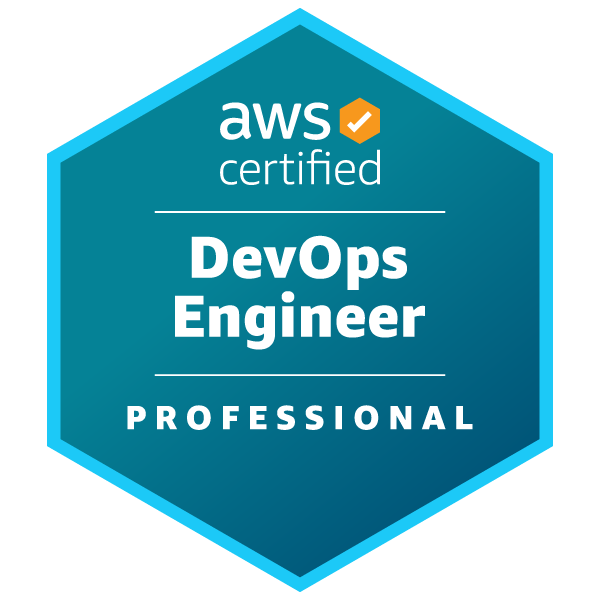
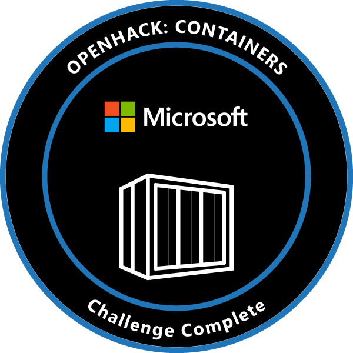
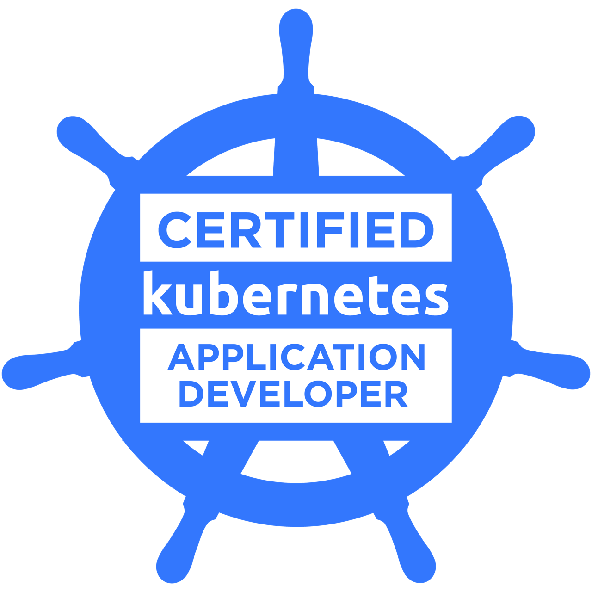
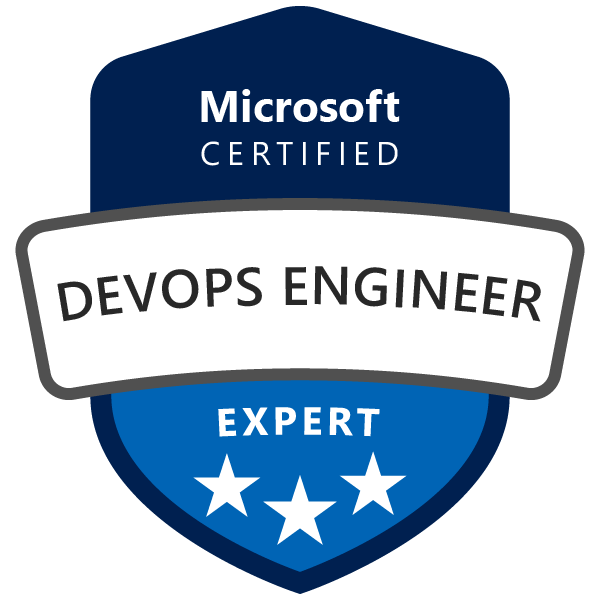

Cloud Engineer
Globant
Designing AI-driven cloud solutions, RAG systems, and multi-region Azure environments. My work spans Azure OpenAI, AI Search, FastAPI, Terraform, API Management, and CI/CD automation.
AWS & Azure / DevSecOps / Applied AI
I am Federico, a Cloud Solutions Architect and AI Engineer. I take ownership from the first architecture decision through implementation, troubleshooting, and delivery.
01 / The starting point
Technology caught my attention early. Teaching myself to code and running Minecraft servers introduced me to infrastructure, automation, troubleshooting, and the pleasure of making systems work for people.
That curiosity became a career in cloud engineering: taking ambiguous ideas, defining a technical direction, and working alongside product and engineering teams until a production-ready solution exists.
The mindset: continuous improvement, useful failures, and constant adaptation.02 / Experience
Globant
Designing AI-driven cloud solutions, RAG systems, and multi-region Azure environments. My work spans Azure OpenAI, AI Search, FastAPI, Terraform, API Management, and CI/CD automation.
Endava
Progressed from intern to senior technician while automating infrastructure, operating Kubernetes microservices, and shipping secure Azure and AWS environments.
Software Engineering
Universidad Tecnológica Nacional
03 / Practice
Multi-region systems, private networking, identity, observability, and governance across Azure and AWS.
Grounded AI experiences that combine embeddings, retrieval, data ingestion, and practical application design.
Repeatable deployments, API operations, and automation that make environments easier to build and operate.
04 / Credentials
Sixteen credentials that mark the path across cloud architecture, DevOps, containers, data, and AI. Each part of the record belongs here.

Issued Feb 2026 · Expires Feb 2029
Verify credential ↗Issued Dec 2024 · Expires Dec 2026
Verify credential ↗Issued Oct 2023
Verify credential ↗Issued Jun 2024
View achievement ↗Issued Jul 2023
Verify credential ↗Issued Jul 2023
Verify credential ↗Issued Jul 2023
Verify credential ↗
Issued May 2023
Verify credential ↗Issued Dec 2022
Verify credential ↗Issued Mar 2022
Verify credential ↗Apr 2024 — Apr 2025
View credential ↗
Jul 2023 — Jul 2026
View credential ↗
Apr 2023 — Apr 2024
View credential ↗Dec 2022 — Dec 2024
View credential ↗Oct 2022 — Oct 2024
View credential ↗May 2022 — May 2025
View credential ↗05 / Contact